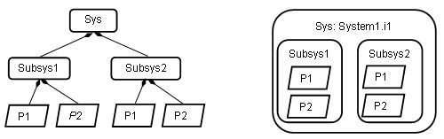

Previous
Next
Previous
Next 
| 18.2 System Structure and Topology |
This section describes ways of graphically showing the
system structure and topology. This
section should be considered as informational rather than normative.
An AADL model represents a system as a set of component
type and implementation
declarations. These declarations may be organized into packages and may have extends
relationships. This organizational structure can be shown in a library view.
This library view may
show the nesting of package names, the content of packages as component types and component
implementations, and the extends and implements relationship using the symbols shown in
Figure
21. The nesting of package names may be simply reflected in the package name label, or the
packages themselves may be shown as a hierarchy based in the name nesting. This hierarchy
may be shown as a navigational tree (familiar to many through navigational browsers) or as
structures similar to those shown for the instance hierarchy in Figure 30. Packages are shown
using the folder as graphical symbol.
Actual systems have an instance hierarchy. This
system instance hierarchy is implicitly
represented in the set of component types and component implementations with one system
implementation identified as the root of the system instance. The subcomponents of this root
system implementation represent the components making up the system, and the subcomponents
contained in the component implementations of these subcomponents recursively identify the
nested component instances.
The system instance hierarchy may be shown as a navigational
tree or as graphical structures as
shown in Figure 30. On the left the system hierarchy is shown in tree form with the containment
association showing the containment relationship. On the right the system hierarchy is shown as a
nesting of the graphical symbols to reflect the containment. Both representations are permissible.

Figure 30 Two Graphical Representations of System
Instance Hierarchy
In many cases navigational tree views for showing hierarchical
structures are combined with a
second panel showing the content of the selected item in the navigational tree. In case of the
AADL, that panel may graphically show the content of a selected component implementation in the
library view or of a selected component instance in the system instance view. In this graphical
view
the connection topology among the subcomponents and between subcomponents and the features
of the component containing them may be shown.